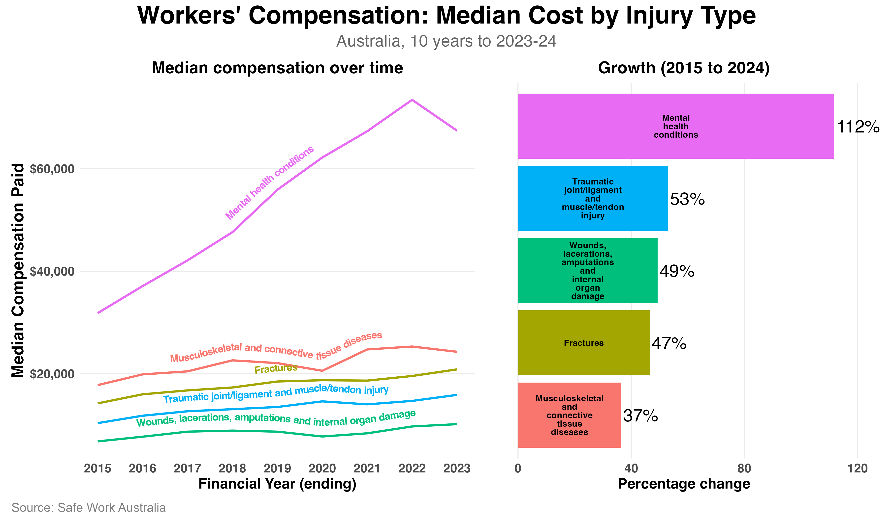

I shared some data a few weeks ago showing that workers compensation claims for mental health issues are among the fastest growing type of claim.
But how much do these claims actually cost organisations?
The figure below shows the median compensation paid for the five most common injury types over the decade up to 2024. The left panel shows yearly costs over time. The right panel shows percentage growth from 2015 to 2024.

The four most common physical injury types all cluster together between $10,000 and $25,000 in median compensation. Growth across these has been steady and similar, ranging from 37% to 53% over the period.
Mental health claims show a much different pattern.
Median compensation for mental health conditions sits at around $70,000, roughly three to four times higher than any of the physical injury types. And the growth in cost has been much steeper: 112% over the same period, more than double the rate of any other category.
So not only are mental health claims growing faster in number (as I shared in my earlier post), they're also becoming significantly more expensive per claim. That combination is what makes this trend so important for organisations to understand.
This is a financial issue as much as it's a wellbeing one. And the costs can escalate quickly for organisations that aren't tracking the drivers of psychological harm in their workforce.